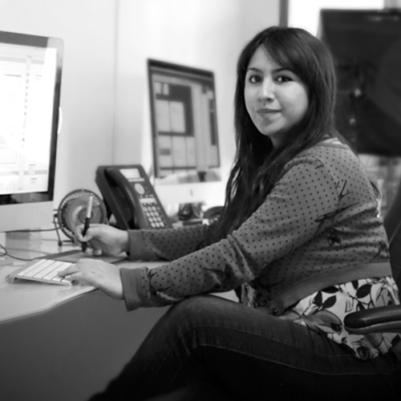

About Me
Hello, my name is Cristina. I'm studying the Interactive Media Design Program at Algonquin College. I was born and race in Mexico, but I moved to Ottawa on December 20th, 2021. One of my main goals is to become a UX/UI designer to get a better and more enjoyable job in Canada.
A few years ago, I graduated as a Graphic Designer. Thus, I've had the opportunity to work in this field, especially in branding and social media. However, I realized that I stayed a lot of time in my comfort zone, just working with a monotonous routine. I've decided to change that and to enjoy not only my career but also my life.
"Time is what we want most, but what we use worst." William Penn
- Play board games with my family
- Watching sitcoms
- Hiking
- Cross-country skiing (or at least trying)
- Cooking